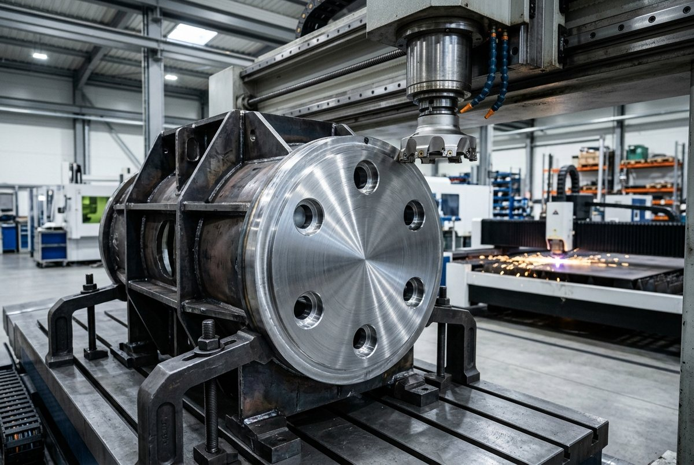

Welding & Fabrication of Specialized Steel Structures (MIG/MAG & TIG)
We execute demanding welding contracts and the fabrication of complex structural weldments. Our workshop is equipped with two radio-controlled overhead cranes with a lifting capacity of 5 tons each, allowing smooth and safe handling of oversized assemblies. Assembly work is conducted on heavy modular 3D welding tables, guaranteeing strict angular geometry and dimensional accuracy.
We weld carbon structural steel, stainless steel, and acid-resistant alloys for demanding industries including food, chemical, and heavy machinery.
- Ramy maszyn oraz urządzeń — precyzyjne korpusy, ramy nośne, podstawy maszyn przemysłowych itp.
- Prefabrykacja konstrukcji stalowych dla budownictwa — gotowe elementy konstrukcyjne hal, obiektów przemysłowych oraz infrastruktury.
- Elementy systemów transportowych — podzespoły przenośników, ramy ciągów transportowych.
- Linie produkcyjne — kompletne moduły, ramy oraz zaawansowane sekcje robocze linii przemysłowych.
- Oprzyrządowanie spawalnicze i montażowe — dedykowane przyrządy ustalające i pozycjonujące, usprawniające procesy produkcyjne.
- Specjalistyczne konstrukcje dla wymagających branż — dedykowane wyroby o wysokim rygorze wykonania dla sektora kolejowego, energetycznego, offshore i zbrojeniowego.

Airless Spray Painting & Surface Preparation
W ALYNX Engineering zapewniamy kompleksowe i trwałe zabezpieczenia antykorozyjne konstrukcji stalowych, spełniające rygorystyczne normy dla przemysłu ciężkiego, budowlanego oraz sektora offshore i energetycznego.
Kluczowym etapem uzyskania trwałej powłoki jest odpowiednie przygotowanie podłoża. Dysponujemy automatycznymi i ręcznymi śrutowniami, które pozwalają na szybkie, powtarzalne i precyzyjne oczyszczenie stali do wymaganych klas czystości.
Aplikację powłok wykonujemy w wydajnej malarni przemysłowej, wykorzystującej technologię zabezpieczeń hydrodynamicznych. Metoda ta pozwala na szybkie i jednolite nanoszenie systemów malarskich (epoksydowych, poliuretanowych czy cynkowych), gwarantując maksymalną odporność na czynniki atmosferyczne, chemiczne oraz środowisko morskie.
- Malarnia o dużej wydajności — dostosowana do sprawnej obsługi wielkogabarytowych konstrukcji oraz serii produkcyjnych w krótkim czasie.
- Automatyczne śrutowanie stali — precyzyjne przygotowanie powierzchni zapewniające idealną przyczepność powłok malarskich i usunięcie zgorzeliny oraz rdzawych nalotów.
- Malowanie hydrodynamiczne — wysoka jakość i ciągłość powłoki ochronnej przy zachowaniu najwyższych parametrów grubościowych.
- Specjalistyczne systemy antykorozyjne — aplikacja farb epoksydowych, poliuretanowych oraz zestawów malarskich dedykowanych dla branży offshore, kolejowej i energetycznej.
- Kontrola jakości powłok — pomiar grubości warstwy oraz weryfikacja warunków schnięcia.

Large-Scale CNC Machining & Precision Sheet Cutting
W ALYNX Engineering stawiamy na pełną kompleksowość – od surowego materiału, przez cięcie, spawanie i obróbkę mechaniczną, malowanie aż po gotowe wyroby. Aby zapewnić naszym Klientom brak ograniczeń gabarytowych i sprzętowych, zaawansowane usługi obróbki skrawaniem oraz cięcia realizujemy we współpracy z szeroką, sprawdzoną siecią stałych podwykonawców.
Dzięki bogatej bazie zweryfikowanych partnerów biznesowych sprawnie koordynujemy procesy wielkogabarytowej obróbki CNC konstrukcji spawanych, a także cięcia laserowego oraz plazmowo-tlenowego blach. Przejmujemy pełną odpowiedzialność za terminowość, jakość oraz zgodność wykonania z dokumentacją techniczną – dostarczasz projekt lub założenia, a odbierasz idealnie dopasowany, gotowy element.
- Wielkogabarytowa obróbka CNC konstrukcji spawanych — precyzyjne frezowanie, toczenie i wytaczanie korpusów, ram oraz podzespołów maszyn po procesie spawania.
- Cięcie laserowe blach — najwyższa precyzja krawędzi i powtarzalność detali ze stali węglowej, nierdzewnej oraz stopów aluminium.
- Cięcie plazmowo-tlenowe — wydajne cięcie grubych blach konstrukcyjnych i arkuszy wielkoformatowych pod dalszą prefabrykację.
- Kompleksowa realizacja „pod klucz” — pełne zarządzanie łańcuchem dostaw (od zakupu materiału, przez cięcie i obróbkę CNC, po spawanie i malowanie) w ramach jednego zamówienia w ALYNX Engineering.
- Gwarancja jakości i nadzór inżynieryjny — stała kontrola wymiarowa i techniczna wyrobów dostarczanych przez naszą sieć partnerów.

3D CAD Design, Technical Documentation & Engineering Supervision
Posiadamy własne biuro projektowo-technologiczne, które stanowi inżynieryjne serce naszej firmy. Łączymy zaawansowane oprogramowanie inżynierskie z praktyczną wiedzą spawalniczą i produkcyjną, oferując pełne wsparcie na każdym etapie – od pierwszych koncepcji po wdrożenie.
Tworzymy zaawansowane modele 3D CAD oraz kompletną dokumentację wykonawczą i montażową 2D. Nie ograniczamy się jedynie do rysowania: kompleksowo prowadzimy i nadzorujemy projekty, dbając o optymalizację kosztów. Świadczymy również profesjonalne doradztwo techniczne, pomagając w doborze materiałów, geometrii i metod wytwarzania tak, aby gotowy wyrób spełniał najwyższe wymagania jakościowe.
- Projektowanie 3D CAD — tworzenie zaawansowanych modeli maszyn, urządzeń, linii produkcyjnych oraz specjalistycznych konstrukcji stalowych.
- Opracowanie dokumentacji 2D — przygotowanie pełnej dokumentacji wykonawczej, warsztatowej i montażowej zgodnej z obowiązującymi normami.
- Kompleksowe zarządzanie i nadzór nad projektami — sprawowanie pełnej kontroli inżynieryjnej nad harmonogramem, budżetem i jakością realizacji od pomysłu do wyrobu gotowego.
- Doradztwo techniczne — analiza i dostosowanie projektów pod kątem oszczędności materiałowych oraz usprawnienia procesów spawania i obróbki.
- Inżynieria odwrotna i modernizacje — odtwarzanie dokumentacji na podstawie istniejących detali oraz udoskonalanie działających linii produkcyjnych.

Kontrola jakości i wysokie standardy produkcyjne
Dział kontroli jakości czuwa nad tym, aby każdy wyrób opuszczający naszą halę w Stalowej Woli odpowiadał najwyższym wymaganiom normatywnym i branżowym.
Szczególny kładziemy nacisk na staranne przygotowanie materiałów do spawania – od dokładnego trasowania, ukosowania i czyszczenia krawędzi, po precyzyjną weryfikację geometrii na stołach montażowych. Utrzymujemy wysoki standard jakości spawania, realizując spoiny o najwyższej estetyce, pełnym wtopieniu i braku wad wewnętrznych. Nasza kontrola obejmuje również weryfikację wymiarową obrobionych elementów CNC oraz badanie parametrów nałożonych powłok malarskich, co daje naszym Klientom pewność i bezpieczeństwo użytkowania konstrukcji w najtrudniejszych warunkach.
- Wysoki standard jakości spawania — rygorystyczna kontrola spoin pod kątem geometrii, przetopu i braku niezgodności spawalniczych.
- Staranne przygotowanie materiału — precyzyjne ukosowanie, czyszczenie i pasowanie krawędzi przed procesem łączenia, gwarantujące trwałość spoiny.
- Weryfikacja geometrii i wymiarów — pomiary konstrukcji na profesjonalnych stołach montażowych oraz kontrola po obróbce CNC.
- Kontrola powłok ochronnych — pomiary grubości powłok malarskich oraz ocena stopnia przygotowania podłoża po śrutowaniu.
- Pełna identyfikowalność i dokumentacja — kontrola materiałów wsadowych (atesty 3.1) oraz tworzenie kompletnych kart kontroli jakościowych dla realizowanych projektów.